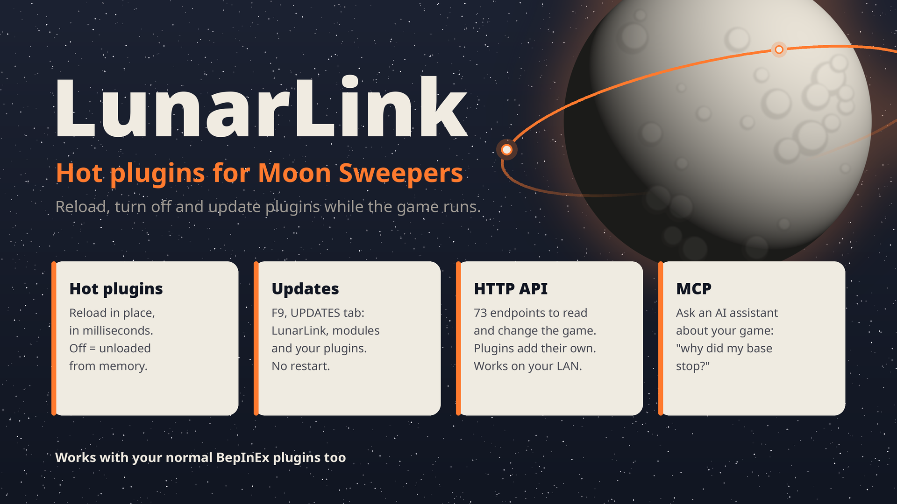

BepInEx/plugins/ like any other.BepInEx/hot/ with LunarLink installed, and it reloads in place: patches, endpoints and state carried across.What it does
A hot-reload framework first. Everything else LunarLink does is built as hot plugins on top of it, so it reloads too.
Reload without restarting
Write new plugins, or convert the ones you have, to a short contract. Rebuild, and the game runs the new code within a frame. Disable one and it's unloaded from memory. The same DLL still ships as a normal BepInEx plugin.
Read and change the game
Structures, belts, terrain, capsules, production, power and robots. Build, remove, move the player and the camera, check a base's health, host crew games. JSON from a script, a browser or another tool.
Every plugin, from the game
F9 shows your hot plugins with their state and errors, and your regular BepInEx plugins with versions and what needs them: on or off for the next start, no moving files by hand. LunarLink updates itself from there too.
LunarLink and your plugins, from the game
F9's UPDATES tab checks when you ask (or at every game start, if you tick that) and shows a count when something's new: LunarLink's releases, its single modules as built from main, and any plugin
that names where its builds are (UpdateFeed(), on GitHub or any HTTPS host). SHA-256 checked. Only the
core ever needs a restart: modules and hot plugins update in place.
Ask an AI assistant
An MCP server turns every endpoint, plugins' included, into a tool for Claude or any MCP client: "is my base working?", "which catchers are full?". Reads only unless you allow more.
Find what eats the frame
Unity's own counters at almost no cost, stopwatches on any method, a component census, and fps fixes for big bases.
How it fits together
LunarLink is the hub. A small core loads once at game start; your plugins hook into it in three ways, and every endpoint, LunarLink's own included, goes through the same route table, the same allow-writes check and the same /help list.
flowchart LR client["Your script,
browser or tool"] subgraph core["LunarLink core · loads once"] direction TB server["HTTP server
+ frame pump"] routes["Route table
method · allow-writes · /help"] loader["Hot loader"] server --> routes end subgraph hot["BepInEx/hot/ · reloads in place"] direction TB mods["LunarLink.Api · .Perf · .Window
LunarLink's own endpoints, F9"] yours["Your hot plugin
Start · Stop · Update
HandleHttp · HttpHelp"] end subgraph normal["BepInEx/plugins/ · loads once"] np["A normal BepInEx plugin
public HandleHttp · HttpHelp"] end game[("The game
MoonFramework · Harmony")] client -- "HTTP :8765" --> server routes -- "its endpoints" --> mods routes -- "a path no endpoint has" --> yours yours -- "null: not mine" --> np loader -. "Start(state) · Stop() · Update()" .-> hot mods --> game yours --> game np --> game
Reloads while you play
A DLL in BepInEx/hot/ with Start(state) and Stop(). LunarLink drives it every frame, hands state across reloads, and routes it any request no endpoint took. No reference to LunarLink needed.
Adds endpoints, no reload
Any BepInEx plugin can answer HTTP: give its plugin class a public HandleHttp (return null for "not mine") and HttpHelp. Its endpoints show in /help and F9, and F9 turns it on or off for the next start.
One DLL, two ways
Write it as a hot plugin and add a small host class: players run it as a normal plugin without LunarLink, you reload it hot while you work. Its endpoints answer the same either way.
Scripts and tools
Anything that speaks HTTP: curl, Python, a browser, another program. Reads are GET; changes are POST and need allow-writes. Another machine needs the access key.
The hot-plugin model
A hot plugin is a plain class LunarLink finds by its method names, with no reference to LunarLink. Each build loads into its own context; on a reload the old copy's Stop() undoes everything and hands over its state, and the new copy's Start(state) picks it up. Leftover patches are taken out, endpoints removed and old copies freed.
sequenceDiagram participant L as LunarLink participant Old as Old copy participant New as New copy L->>Old: Stop() Old-->>L: state to keep L->>L: remove leftovers, unload L->>New: load the new build L->>New: Start(state) Note over New: Update() every frame
public class Main
{
int starts;
public void Start(string state)
{
int.TryParse(state, out starts);
starts++;
// patch, register, subscribe...
}
public string Stop()
{
// undo everything Start did
return starts.ToString();
}
public void Update() { }
// optional: where your builds are, so LunarLink can update it
public string UpdateFeed() => "github:you/yourplugin";
public string HandleHttp(string method,
string path, NameValueCollection q,
string body) =>
path == "/hello"
? "{\"starts\":" + starts + "}"
: null;
}
The contract, the rules and shipping → Convert a plugin you have → More examples →
Start in five minutes
You only need BepInEx 6 (IL2CPP). MoonFramework is optional: LunarLink uses it for its power fix and for plugins that add buildings.
- Install it, with the game closedDownload
LunarLink-<version>.zipfrom Nexus Mods or the latest release and unzip it into the game's folder (the one that holdsBepInEx/). Or build it from source with the .NET 8 SDK:git clone https://github.com/swheettaos/lunarlink.git cd lunarlink && ./build.sh --install
- Start the game and load a moonLunarLink starts answering once the loading screen is gone.
- Ask it something
curl -s 127.0.0.1:8765/status curl -s "127.0.0.1:8765/structures?x=0&y=2000&z=0&r=30"
- See everything it can doOpen
http://127.0.0.1:8765/help.htmlin a browser, or press F9 in the game. - Put your plugins in the right folderHot-compatible plugins (their docs say they reload in place) go in
BepInEx/hot/and turn on in F9; every other plugin stays inBepInEx/plugins/as usual. Which is which → - Allow changes when you want themCreate
BepInEx/plugins/LunarLink/allow-writes. Without it, everything that would change the game is refused.
The HTTP gateway in one table
One pattern for everything. Every change is a POST and needs allow-writes; the /check endpoints ask the game without changing anything.
| Request | Means | For example |
|---|---|---|
GET /thing | List it, filtered by query | /structures?kind=99, /belts, /robots |
POST /thing/check | Would this change work? | /belts/check, /structures/check |
POST /thing/create | Make it | /belts/create |
POST /thing/modify | Change it | /player/modify?x=&y=&z= |
POST /thing/remove | Remove it, the game's refund paid | /structures/remove?ids=41001 |
Read more
API reference
Every endpoint LunarLink serves, searchable and grouped by area.
Writing a hot plugin
The contract, the rules, building, reloading and shipping.
How hot reloading works
The design, and why it's built the way it is.
Updates
How LunarLink updates itself, and how your plugin can update itself with one method.
MCP server
Let Claude or another AI assistant use the game through LunarLink: set-up and what to ask.
Nexus Mods
Download it, endorse it, and post in its comments.
The wiki
Installing, settings, troubleshooting, the F9 window, performance tools.